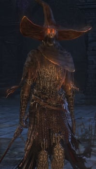
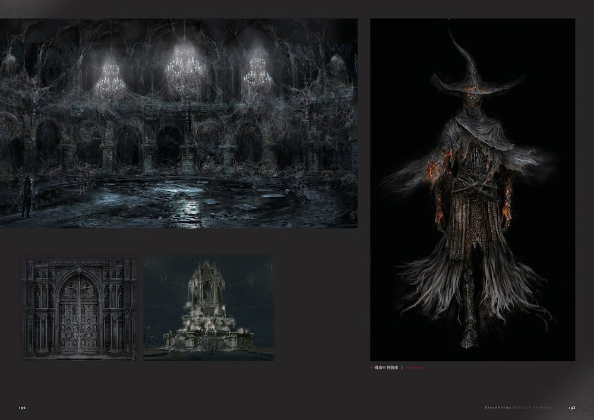

Keeper of the Old Lords |
|||
|---|---|---|---|
|  | |||
| General Info | |||
 |
 |
Location | Drops |
| 3867 | 3471 | Central Pthumeru Chalice | Central Pthumeru Root Chalice Can drop Twin Blood Stone Shards |
| 19690 | 54224 | Defiled Chalice | Radial Blood Gem |
| Defenses | |||
 |
 |
 |
-- |
| 103 | 99 | 99 | -- |
 |
 |
 |
 |
| 99 | 30 | 70 | 75 |
 |
 |
 |
 |
| 120 | 210 | No | No |
Keeper of the Old Lords (旧主の番人 Kyūshu no ban'nin lit. "Watchman of the Old Lords") is a Boss in Bloodborne. She was granted eternal life by the masters she protects - the Great Ones.
Information
- The Bone Ash Set becomes available to purchase at the Insight Bath Messengers after defeating this boss.
- The boss variant is female, while the enemy variants accompanied by dogs are men.
Locations
- Central Pthumeru Chalice (Layer 2)
- Defiled Chalice (Layer 1)
- May appear as a regular, respawning enemy with greatly decreased health in high level dungeons, mostly accompanied with Keeper's Hunting Dogs
Drops
- Central Pthumeru Root Chalice
- Radial Blood Gem (when defeated in Defiled Chalice)
- Shard Damp Blood Gem (4)
Combat Information
- Keeper of the Old Lords is staggered as easily as other human sized enemies, even when in the middle of an attack. Well timed blows can prevent the Keeper from completing any attack altogether.
- If you're having trouble with this boss (like in a defiled dungeon where you only have half health, for instance), you can poison it with two Poison Knives. It's best to use the strategy outlined above for the first phase of the fight and then switch to poison daggers when it buffs its sword with fire.
- The Keeper of the Old Lords can be beaten easily with Ludwig's Holy Blade by baiting her into engaging you, and staggering him in the middle of his somewhat slow attacks. To do this, get just in range of it so that it starts walking towards you. Once it gets about 6 steps away, charge your Ludwig's Holy Blade power attack in Greatsword (transform) mode and let go just before it swings. After awhile, it'll apply Fire Paper to their blade and begin to run at you. Continue the same tactic, however while compensating for its run speed, also immediately back dodge twice after landing your attack. It will often follow up its attack with a long reaching move and you will be caught with it if you're late.
- This boss can be easily stun-locked with the Blade of Mercy in dagger form. The Keeper won't be able to attack or dodge away. Just keep on top of her, and when your stamina gets low hop back and recharge.
- Do not completely deplete your stamina; leave a little bit so you could dodge away at the end, or the Keeper will surely retaliate should you try to walk away.
- Other weapons can still stun-lock, but his dodge attack would be fast enough to slip through between 2 swings of your weapon.
- When his HP is reduced to about two thirds, the Keeper will attempt to apply fire to his sword and gain new abilities. While the Keeper attempts to do so, any attack will stagger him out of the animation, stopping him from entering phase 2. However if the attack landed too late and fire is already burning away on his sword, he would enter phase 2 anyway. If one keeps preventing him from entering phase 2, he would give up for a while and continue fighting.
- Often after being parried (or being shot during a non-parryable attack, particularly the 'short shoulder-charge into flame punch' maneuver), the Keeper will do a defensive two-swing combo. He also tends to use this after getting up from a Visceral Attacks. These defensive swings can themselves be parried, allowing one with proper timing to chain Visceral Attacks against him without giving him any opportunity to defend himself.
- Skill/Bloodtinge builds can have an easy time against this boss. You just have to attack twice with a transformed Reiterpallasch then immediately afterwards use the transformed R2 to shoot. It will always parry since he will attempt to attack after the second hit. Even after he buffs his weapon he will do the same thing. You can repeat this strategy until he falls. This strategy also works with Chikage.
- Be careful if you chose to parry this boss. Landing a visceral attack while he is up against a wall will often times clip him into the wall, forcing you to restart the battle as he is no longer accessible.
- For Arcane build, Keeper of the Old Lords can be staggered with Executioner's Gloves, combined with the use of Bloodbullet and Oedon Writhe Visceral Attack, the Keeper can be killed with ease.
| Attack Name | Attack Description & Counter |
|---|---|
| Flame Wave | The Keepers' fist glows red before sending out two waves of flames at the player. Typically used when the player is at medium range. |
| Flame Burst | A ball of fire erupts from the Keepers' hand. Short range but fast. The Keeper could follow up with a slash after this attack, or he could slash first then immediately perform this attack. |
| Ring of Fire | The Keeper lifts their glowing fist into the air before slamming it into the ground, creating an expanding ring of fire around them. |
| Dodging Slash | Two wide sword slashes, with the second being executed while the Keeper dodges backwards. Sends out waves of fire when the Keeper has ignited his sword. |
| Running Slash | The Keeper runs forward and swings his sword. Sends out a wave of fire when his sword is ignited. One of his easiest attacks to parry. Fire pistol just before the swing. Identify the attack, let him come as close as you dare and then shot. |
Videos
(( Please respect these video posting guidelines))
Notes & Trivia
- In the Defiled Dungeons the amounts of physical damage received and heal will be decreased along with the decreased max health, but elemental damage will do normal damage making Keeper of the Old Lords surprisingly tough, being able to 1 shot players.
- Is a possible reference to Dark Souls, his name as Keeper of the 'Old Lords' referring to the Great Souls as well as his use of Fire, remenisent of pyromancy, in addition their armor greatly resembles the Dark Set from all 3 Dark Soul games, with the hat and robes added.
- Keepers have at least 8 eyes in their head, with pupils and irises. Their eyes resemble those of Amygdala.
- Their armor resembles a spider's web and eyes can be found within the gaps. This makes it resemble Amygdala's head.
- Eyes can be found within their flames. Similar eyes can be found in the flames of Boom Hammer Hunter.
Gallery

 Anonymous
Anonymous
- Anonymous
lmao easiest boss in the game, six consecutive parries, just shoot it with a gun every time she tries to get up, she always does a sword swing and you can exploit that weakness.
- Anonymous
- Anonymous
- Anonymous
I almost killed her in the 2nd go, she had like 1 hp left, and now I'm trying to beat her for 4th day since then.
- Anonymous
Using the untricked saw spear fast R1 attack I was able to continuously attack and keep her stun locked until running out of stamina. Also I found that after parrying her I could run over and start attacking before she got up, once again stun locking until I ran out of stamina. Makes it a much easier fight.
- Anonymous
This boss all but confirms Bloodborne takes place much later on in the dark souls universe. The descriptions on her gear set reference the first sin and the fact she’s an immortal ashen one, which is an awesome tidbit since this came out before DS3
- Anonymous
I want their fire sword :(
It kind of looks like the Carthus curved sword, now that I think about it
- Anonymous
After about half way through the boss encounter, they can be locked down with any mid-to-fast weapon + beast roar.
- Anonymous
The Plain Doll has a specific dialogue after beating this boss. She mentions Gherman sleeping easier.
- Anonymous
Got him on my first try in Defiled. This boss is surprisingly easy to stagger and visc: Just hang back to stay out of range of the fire attacks, wait for him to come to you with the slash attack and time your shot. He'll be almost upon you when you fire, but stay calm. Be ready to perform the visceral as soon as you hear the audio cue. Then back off, don't try to get extra hits. It helps if you can keep him by the wall while you control the center of the room - avoids camera issues when dodging around the pillars. If you've played the DLC and have the Blacksky Eye, it's useful for damaging him from a distance if he gets caught up spamming fire. He can't dodge if he's mid-attack animation. You pretty much have unlimited quicksilver as you can dedicate your vials to healing after blood bullets, since normal healing isn't an issue (because he one-shots you).
- Anonymous
- Anonymous
If you're really struggling with this fight, use the knockback of viscerals to push the keeper against a statue at the edge of the room, then perform a visceral attack there. She will glitch up into the ceiling, either becoming stuck, in which case you need to restart, or fall off to her death. You can chain viscerals by parrying the second swing of the two that she does when she gets shot. She will do this when she gets up from the visceral attack, allowing you to parry again.
- Anonymous
A good tactic I found (especially in the defiled chalice) for high Arcane users, is to equip the Blade of Mercy in it's dual form (for stunlock, it doesn't have to be very high, mine was at +3 with moderate blood gems), and get them into a corner. Once they're in the corner, use the Augur to knock them down, and every time they stand up, use it again, switching between the Blade and Augur (especially if you think the Keeper is going to retaliate, you get a free visceral attack). Took me a few tries to get it right, but once I was able to successfully get them in the loop, they stood no chance.
- Anonymous
Gets absolutely demolished by the transformed Holy Moonlight Sword because the high arcane damage, stunlock and range.
- Anonymous
Augur Of Ebritis has a good delay time that opens him up for a visceral attack easily. I don't see how anyone could find this fight hard. He's honestly tougher in the dungeons with his dogs (the dogs being the hard part)
- Anonymous
It amazes me how the bossfight is normally about as dangerous as a toddler with a 2x4, so they just made everything one shot you in a defiled chalice. An actual employee at from thought that was a good idea
- Anonymous
Stand a few feet away from them, shoot them with your gun. They will do a back step and a slash followed by another slash. Shoot as the 2nd slash starts. Visceral. Rinse repeat.
- Anonymous
very nice getting two hitted every time. I am truly amazed by how retarded something can be
- Anonymous
These strats are ineffective. Blade of mercy does not stun lock for more than 1 hit. The R2 attack with Ludwig's holy blade fails against one of the attacks. Best strat seems to be dodge then R1, and nothing else.
- Anonymous
Be thankful the boss battle isn't like the Capra Demon setup. Imagine two of those keepers Dogs rushing you at the same time the Keeper does.
- Anonymous
Love how fire damage isn't scaled down like other damage types in cursed chalices. Very fun
- Anonymous
Wtf with this boss... Easy moveset, easy dodge, easy stun, easy counter... But I'm still getting destroyed by it (he/she ?) What kind of black magic is this I don't f_cking understand
- Anonymous
I trapped um in the corner Swing swing parry etc Beat to pulp
- Anonymous
It's probably worth noting that if you have it, the Beast Claw is fast enough to also work with the Blade of Mercy strat, if not, better due to it's damage output.
- Anonymous
I think the general opinion seems to be that Keeper isn't that good of a boss, but I really like... uh, her? Even though most of her moves and such are pretty simple and easy to counter/dodge, the fight is still often quite engaging and fair (unless of course she gets stuck spamming the double flamewave-attack, which seems to happen fairly often).
- Anonymous
This is what happens to you when you go too deep into fashion souls
- Anonymous
I like how the strat started with calling the keeper "her," then within the same sentence said "him," then every sentence after that as "it" lmao
- Anonymous
- Anonymous
If you use the threaded cane transform it into it's whip form and Dodge to your left Everytime he attacks you close range, even with the buff on. Right after dodging do a quick R1 and then back out. It ain't much but it's honest work lol
- Anonymous
What small ***** Asians thought this retarded *****ing boss deserves 25k hp and you have half hp and healing in defiled chalice 4, jesus *****ing Christ all his attacks (which are very *****ing quick) one shot you , imbeciles ruining my fun.
- Anonymous
If you're lucky enough to have a friend help you through a bit of the DLC to the point in which you can obtain the Gatling Gun, I managed to gun this boss down with 25 bullets at +6, with 10 Bloodtinge! Hope it helps anyone struggling!
- Anonymous
Auger of Ebrietas and Holy Moonlight Greatsword at 50 arcane will destroy this boss. Get some blood bullets, knock to ground with augur, spam until out of stamina, hit with augur twice so stamina can regenerate to full, repeat. Easiest way I’ve found for arcane builds. Unless ranged spam works better. I haven’t tried it.
- Anonymous
The armor is very similar to that of the lord’s blade armor from the first Dark Souls. Of course the headpiece is different, but still.
- Anonymous
It's a shame we can't get ahold of their sabre, especially considering that there's not really a flame equivalent to the Tonitrus excepting the Boom Hammer, which isn't really the same kinda weapon seeing as you only get one hit that does flame damage at a time with it.
- Anonymous
- Anonymous
If you have hard times trying to beat her in Defiled Chalice, just use the trnasformed Blade of Mercy. She becomes ridiculously easy, since you can make a 5+ combo and still have stamina enough to dodge.
- Anonymous
Worst boss of all time in cursed labyrinth...literally 1 shots you with every attack and spams fire nonstop so you can never get close, and if you do, the fire burst 1 shots you...
- Anonymous
looks cool as*****. destroyer of the cainhurst weaboo fashion meta, much?
- Anonymous
I can't believe I never noticed until now, but when the Keeper applies the fire buff to their weapon, the animation is the exact same as applying elemental buffs in Dark Souls. If the universes are connected, though, I actually prefer to believe that Dark Souls is just a framework narrative within the world of Bloodborne, like a mythology that has long since passed into obscurity. Miss me with that "Moon Presence is Gwyndolin" garbage.
- Anonymous
I bugs me how detailed they got with this enemies pryomancy and other cool arcane attacks enemies use, I feel like they could’ve easily transitioned that to player use aswell :(
- Anonymous
My strategy for these guys is to just riposte the crap out of them. Keep your distance, and shoot em when they attack. Hope this helps, and happy hunting!
- Anonymous
Discovered a technique for Defiled Keeper after getting my ass handed to me repeatedly. Fire up some Blood Bullets for practice so you don't waste your QS, and try to parry. After you perform a visceral, walk up to him until you're about a foot or so away and slash at him once with Ludwig's Holy Blade (that's what I used, not sure how well this works with other weapons). 8/10 right after you hit him once after recovering he'll want to slash at you which gives you a chance to parry again. You can chain this a bunch of times if you can get the timing right. Such a relief after getting beaten by this guy for almost an hour.
- Anonymous
It glitches he went to the roof and got stuck there after reposting him agenst a wall
- Anonymous
Blacksky Eye destroys this boss much like Beast-Possessed Soul. Just stand outside of her range and blast her into the corner. She will initially dodge some of them, but enough of them will hit that she will start backing away while slashing. Once she is against a wall and no longer able to dodge sideways, you can start alternating between shots to fill up on blood bullets or heal. At 50% HP remaining, the fight is basically over as she will continually try to buff her sword, only to get staggered out of it.
Did this in Defiled Chalice just now with my 40 Arcane build on the first try with zero preparations. I was genuinely surprised it worked, lol.
- Anonymous
Has anyone seen hunter enemies in Chalices wearing a full Bone Ash set and fire buffed saw spear?
If you are running an arcane build and accidentally get the boss stuck in a wall due to visceral attacks, just use blood bullets and accursed brew and it becomes the cheesiest fight I've seen in this game.
- Anonymous
FromSoft Employee 1: "Hey FromSoft Employee 2, what're you doing?"
FromSoft Employee 2: "I'm trying to think of interesting ways to make this boss challenging in later chalice dungeons."
FromSoft Employee 1: "Lmao ***** that just halve the player's hp and make him 1-shot people."
FromSoft Employee 2: "Lol k den."
FromSoft Employees 1 and 2 were later publicly executed for their gross incompetence.
Shoot him once, he'll always try to go for the backward evade -> 2 hit combo afterwards then parry him during those swings. It's easy win. He'll never unlock his 2nd phase if you stunlock him when he's buffing his weapon.
- Anonymous
I cannot express how much I hate this *****ing guy with his bull*****fire attacks and his bull*****R1 spamming ass.
- Anonymous
This boss makes me wish that Bloodborne would let you collect enemies' weapons like in Dark Souls. I want that flame saber so badly :(
- Anonymous
- Anonymous
With the Hunters Axe at full extension, you can running light strike him, and dash backwards. May take a while, but almost guarantees you not getting hit, as he is stunned every time you do it. Be sure to keep your distance after doing the attack. Also, get the timing of his fire swipes, so that you can get the jump on him just as his second strike ends.
- Anonymous
At 40 str, 40 skill and 18 arcane using the empty phantasm shell I was also able to do the R1 R1 L2 visceral-lock combo. Made this boss very easy.
- Anonymous
Keep distance and just R2 combo with moonlight greatsword. Did wonders on my level 20 moonlight run in defiled.
- Anonymous
did a visceral then ganged up on her using the beast roar, she wasn't able to get up once granting me an easy kill once i started hitting with my weapon.
- Anonymous
A fully upgraded Moonlight Sword will do about 800 damage with the L2 charged, blood gems being Tempting Damp (6) Odd Arcane Damp (6) and Tempering Damp (4), Player stats being (From top to bottom) 58, 40, 31, 25, 12, 31
- Anonymous
Can easily be stunlocked and killed with the L2 of the whirlgig saw.
- Anonymous
Fight is a joke with parries. https://www.youtube.com/watch?v=2ixJzl--Yi4
- Anonymous
Community glyph : b4bi2s3n right in front of 1st boss door need help with this dungeon I'm loosing faith in getting the platinum. Tried so many times I really need help , thank you in advance . My psn is Converge26 .. level 109 .. using hunters axe 10 and cannon 9. Looking to make friends who help out in dungeons I will return the favor .. thnx again
- Anonymous
- Anonymous
can we get these as a new hunter tool in future pls FROM thx
- Anonymous
An easy way to defeat this guy in Defiled chalice: Take a cane (+9 if possible) and switch it to whip mode. Once the battle starts rub a slug on it (+80 arcane damage). Now what you need to do is keep a distance to avoid his charging attacks and use whip R2 attack (it has range superior to R1). Each strike will stagger and stop the guy's rush. Do not get greedy, after one strike immediately strafe back. Even when he charges his sword the R2 of the whip will cancel his attack. I tried maybe 5 times to finish this guy using burial blade+10, then switched to whip cane and that did a quick job of him. Also, I wore charred attire and rune +100 elemental defense. Good luck.
- Anonymous
Community glyph : b4bi2s3n right in front of 1st boss door need help with this dungeon I'm loosing faith in getting the platinum. Tried so many times I really need help , thank you in advance . My psn is Converge26 .. level 109 .. using hunters axe 10 and cannon 9. Looking to make friends who help out in dungeons I will return the favor .. thnx again
- Anonymous
He always swings right after getting up from visceral attack. Just time your shot correctly (press button right before he ends his "getting up" animation) and he'll be staggered again. Never will he attack again.
- Anonymous
Community glyph : b4bi2s3n right in front of 1st boss door need help with this dungeon I'm loosing faith in getting the platinum. Tried so many times I really need help , thank you in advance . My psn is Converge26 .. level 109 .. using hunters axe 10 and cannon 9. Looking to make friends who help out in dungeons I will return the favor .. thnx again
- Anonymous
- Anonymous
I don't think poison works against her in the defiled version. I hit about 18 poison knives in rapid succesion, but she didn't get poisoned. Can someone confirm?
- Anonymous
Anyone want to help me take him/her out in the defiled dungeon? Any help would be appreciated. Thank you.
- Anonymous
the strategy outlined above with ludwigs holy blade also works very well with the burial blade, it also having long reach and an additional knockback effect, eliminating any danger of the boss attacking you before you can dodge away.
- Anonymous
- Anonymous
Im using blades of mercy skill build with beast roar, use the dagger form to stun lock her as mentioned above but instead of dodging just hit beast roar she will fall down and you can regain stamina, rinse and repeat, did this in the defiled dungeon and had no problems
- Anonymous
I know the maker said this game has no connection to dark souls bur this enemy is strangely like a boss that is controlling the first flame.and his name keeper of the old lords.
- Anonymous
- Anonymous
You can kinda bug it out if you use Blades of Mercy and put him into this spot: https://www.youtube.com/watch?v=BX91HaLzqvA
- Anonymous
In defiled this guy was hard. Once i took the timing with L2 axe swing, he fell easy, but timing is all because in defiled u miss one hit, and he one shot you. freakin nazgul.
- Anonymous
A vid on the cnetral chalice dungeon boss fight. hopefully I get to the defiled chalice and do that fight soon. https://www.youtube.com/watch?v=G4fsk9yPNiw
- Anonymous
I just made a Ailing Loran chalice dungeon, and it had three npc hunter type enemies, fully dressed in the bone ash armor, with saw spears that they almost always enhanced with fire. They were all female (as indicated by their death screams). This brings me to believe that these Keepers are women who have yet to undergo the burning process, and thus not possess the fire abilities that regular keeper enemies have, keepers who, despite their monstrous voice, may too be women. In the Layer two, I found the abhorrent beast, a respawning beast claw hunter, and the Three respawning hunters who are cosplaying as the keeper of the old lords enemy. There's also an Uncanny Tonitrus. Glyph: c2svnm37, Rotted Ailing Loran, Both a Fetid and Rotted offering
- Anonymous
I hit him with 10 consecutive poison knives and the only did 30 damage on each impact with no continuous damage.. Wth??
- Anonymous
the Reiterpallasch will easily parry/stagger this enemy and allow for V. Atts, all you need to do is a single stab and then l1 transform into gun mode, the timing will always parry them, makes the boss a literal cake walk.
- Anonymous
Keepers of the Old Lords are not female, as many people think. Anyone who thinks they're female are confusing them with the Bone Ash Hunters, a different enemy entirely. True Keepers are male (indicated by vocals) and can be differentiated by their weapons (unique katana, no firearm and pyromancy), they also have a different walking animation. Bone Ash Hunters on the other hand have a firearm and use a Saw Spear with Fire Paper. Bone Ash Hunters are just Hunters wearing the Bone Ash set, much like you can.
- Anonymous
Is extremely effective. If you manage to back it up against a wall you can just stand out of its reach and empty the Rosmarinus into it and it won't be able to retailiate. All it will do is keep doing the defensive two swings back jump. When it tries to start phase two is the best time to do it: stagger it out of the attack then use the Rosmarinus till you're out of bullets. If you do it in phase two the defensive back jump has ranged fire to go along with it so the strategy won't work.
- Anonymous
Definitely do be wary of the glitch that sends her into the wall/ceiling. I thought I was very clever getting her trapped in a corner and parrying her into oblivion...then she shot straight up in the air and onto the floor above me. Projectiles, bullets, or jump attacks couldn't hit her and I had to start over. It seemed that was a charmed run because it took a solid ten more efforts before she finally died.
- Anonymous
Didn't expect it to be an easy boss. Killed him under 20 seconds.
- Anonymous
Blades of mercy r1 spam. Beast roar to knock her down and den BoM again. Helps in defiled chalice
- Anonymous
Here's my video, I took out most of her HP using parry- + Visceral, the rest was short 2-4 hit combos: https://youtu.be/GA8UuTzUPk0 My strategy is simple. Parry aggressively and Visceral Attack. Get a few hits while she recover, double back and space out. Lure her Katana parry-able attacks: stay a few meters away from her, occasionally get close in personal to bait her double slash attack - then parry her 1st or 2nd hit. Walk back (spacing) or dodge back when she does her double flamethrower/cone of flame attack. Dodge her combustion attack. Dodge behind her and get some hits. Stun-lock her with a fast weapon, but don't get greedy! Be ready to dodge or parry - immediately on her counter attack. I managed to get 3-4 hit combo with Ludwig Sword form, then immediately fire my firearm, parrying and staggering her as part of the combo. High risk high gain. In other words, Parry-combo: https://youtu.be/GA8UuTzUPk0?t=95 Her late stage includes two katana swipes that also fire the cone of flame. This is parry-able (I think) but only the last swipe.
- Anonymous
Here's my first attemp at the chalices, She was kinda easy except for one attack that can one shot youbut is easy to dodge. https://www.youtube.com/watch?v=7tqOh3obJ08
- Anonymous
Here's a quirky quick kill glitch. I successfully killed her using this technique but failed to capture the video. When I tried to do it again, this was the result: https://www.youtube.com/watch?v=XY5ejY5km-4
- Anonymous
Both the keeper and the beast possesed soul have similar fire attacks, kinda a shot in the dark, but could the beast be an infected/transformed keeper?
- Anonymous
This boss cannot be poisoned with just two knives. I just threw like 10. Nada. This does not work
- Anonymous
You can chain an infinite number of parries on them. Parry them normally, as their getting up leap attack them and then IMMEDIATELY HIT THE PARRY BUTTON. The attack frames from their get up attacks occur almost instantaneously, so even if it doesn't look like they will get parried, they will. Then riposte them again, repeat for lulz. Found this out myself while fighting the one in Cursed Chalice.
- Anonymous
- Despite the Bone Ash Hunters being female, the Keeper of the Old Lord's voice is male. Possibly an overlook by the developers?
- Anonymous
- Anonymous
Use the normal form of Ludwig's Holy Blade and the Hunter's Blunderbuss. Back him into a corner from a visceral attack. As soon as the visceral attack is over, he will start to get up. Attack twice with the normal swing and take a step back. He will do his defensive two-hit combo where he moves backwards (into the wall). Between the first and second swing of this combo, shoot him with the blunderbuss for another visceral attack. Rinse and repeat. If you're on PSN, my name is UponABurn1ngBody
- Anonymous
- Anonymous
Its simple, just slash 4 hits with the Saw Cleaver then fire with the blunderbuss (make sure you have enough HP to survive a hit) and use a visceral attack. Make sure to rush in and start the 4 hits again with the cleaver and repeat until she dies.

{kind=link}
{kind=link}
{kind=link}
If you are having trouble this boss. Just hit her three times and shoot. Pretty much a guarenteed visceral. Hope this helps any of y’all having trouble.
1
+10
-1